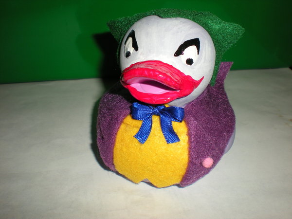

TypeScript
le JavaScript statiquement typé
Qui suis-je ?
- Benoit Lemoine
- Développeur full-stack chez Xebia
- @benoit_lemoine
JavaScript c'est bien, mais...

Historique de TypeScript
- Made in Microsoft en 2012...
- ... mais open-source et libre (License Apache 2) : https://github.com/Microsoft/TypeScript
- Super-ensemble d'ES5
- Typage statique
- Polyfill pour ES6
Les types - déclarer un type
var name:string = 'Dolan';
var nbLegs:number = 2;
var isMamal = false;
//doesn't compile
//number is not assignable to type boolean
isMamal = 3;
Les types - les génériques
var featherColors:Array<string> = ['green', 'red', 'grey'];
var lengthOfClors: Array<number> = featherColors.map(function(color) {
return color.length;
}); // [5, 3, 4]
Les types - Les classes
class Animal {
constructor(public name) { }
}
class Duck extends Animal {
quack() {
return 'quack';
}
}
class Platypus extends Animal {}
var dolan:Duck = new Duck('Dolan');
console.log(dolan.quack());
Les types - typage graduel

var scrooge = new Duck('Scrooge');
var perry = new Platypus('Perry');
//Doesn't compile Platypus is not assignable to type Duck
scrooge = perry;
//we can assign anything to any
var jokerDuck:any = perry;
//We can assign any to everything
scrooge = jokerDuck;
Les types - Les interfaces
interface Quacker {
name:string
quack():string;
}
class Goose extends Animal implements Quacker {
quack() {
return 'honk';
}
}
var daffie:Quacker = new Goose('daffie');
Les types - Le typage structurel
interface Quacker {
name:string
quack():string;
}
var chicken:Quacker = {
name:'Chicken',
quack: function() {
return 'cluck cluck';
}
};
Les types - Union Type
var perry = new Platypus('Perry');
var donald = new Duck('Donald');
var animals:Array<Animal> = [perry, donald];
var duckOrPlatypus:Array<Duck|Platypus> = [perry, donald];
EcmaScript 2015 - EcmaScript 6
//TypeScript
let lordify = function(names = []) {
return names
.map(name => `sir ${name}`);
}
//JavaScript
let lordify = function(names) {
if (names === void 0) {
names = [];
}
return names
.map(function (name) {
return ("sir " + name);
});
}
Les modules internes
//Fichier Animal.ts
module Animal {
var privateVar = "test";
}
//Fichier Duck.ts
/// <reference path="Animal.ts" />
module Animal {
export class Duck {}
}
new Animal.Duck();
//Fichier Animal.ts compilé
var Animal;
(function (Animal) {
var privateVar = "test";
})(Animal || (Animal = {}));
//Fichier Duck.ts compilé
var Animal;
(function (Animal) {
var Duck = (function () {
function Duck() { }
return Duck;
})();
Animal.Duck = Duck;
})(Animal || (Animal = {}));
new Animal.Duck();
Les modules externes
AMD ou Common JS
//Fichier Dolan.ts
import Duck = require('Duck');
export var dolan = new Duck('Dolan')
//Dolan.ts compilé en AMD
define(
["require", "exports", 'Duck'],
function (require, exports, Duck) {
exports.dolan = new Duck('Dolan');
}
);
//Dolan.ts compilé en CommonJS
var Duck = require('Duck');
module.exports = new Duck('Dolan')
Les déclarations d'ambiance
declare var _;
_.filter([1,2,3], (i) => i%2 === 0);
Definitely Typed
http://definitelytyped.org/
/// <reference path="lodash/lodash.d.ts" />
_.filter([1, 2, 3, 4], (i) => i%2 === 0) // [2,4]
_.filter([1, 2, 3, 4], (i:string) => i%2 === 0) //ne compile pas
TSD
http://definitelytyped.org/tsd/- Gestionnaire de dépendances pour les fichiers de définition
- Pas de gestion de version (mais ça arrive...)
Exemple Angular - Avant
angular.module('MyCtrl', ['myService','$scope',
function(myService, $scope) {
$scope.myValue = myService.maValue;
$scope.changeValue = function() {
$scope.myValue = Math.random();
};
}
])
//template
<div ng-controller="MyCtrl">
{{myValue}}
</div>
Exemple Angular - Après
class MyCtrl {
myValue:number;
static $inject = ['myService'];
constructor(myService:MyService) {
this.myValue = myService.maValue;
}
changeValue() {
this.myValue = Math.random();
}
}
angular.module(MyCtrl.name, MyCtrl);
//template
<div ng-controller="MyCtrl as myCtrl">
{{myCtrl.myValue}}
</div>
Utiliser TypeScript
- Grunt, Gulp
- Plugin pour Play, Wro4j, Grails, etc.
- à la main : compilateur en JavaScript
TypeScript 1.5 - RTTI
//TypeScript
function firstChar(word : string) {
return word.charAt(0);
}
var x : any = 3;
displayFirstCharacter(x);
//JavaScript
import * as rtts from 'rtts';
function firstChar(word) {
rtts.types(word, rtts.string);
return word.charAt(0);
}
var x = 3;
displayFirstCharacter(x);
TypeScript 1.5 - Annotations
function addAnnotation<A>(c: A, annotation: any): A {
((<any>c).annotations || ((<any>c).annotations = []))
.push(annotation);
return c;
}
function Template(arg: { url: string, directives: any[] }) {
return c => addAnnotation(c, new TemplateAnnotation(arg));
}
@Template({
url: '/todo.html',
directives: [Foreach]
})
class TodoApp {
}
TypeScript 1.5 - ES6
var [m, d, y] = [3, 14, 1977];
console.log(d) // 14
for (let word of ["one", "two", "three"])
console.log(word); //affiche "one","two","three"
function* idMaker() {
var index = 0;
while(true)
yield index++;
}
var gen = idMaker();
console.log(gen.next().value); // 0
console.log(gen.next().value); // 1
TypeScript 2.0
- ES6 (modules, template String, etc.)
- ES7 (async/await)
Les limites
- Un précompileur de plus
- La vitesse de compilation
- Les fichiers de définition
- Pas compatible avec JSX
Conclusion
- Migration Progressive
- Facilité d'apprentissage
- Compatibilité avec ES6
- Refactoring simplifié
- Assistance de l'IDE améliorée